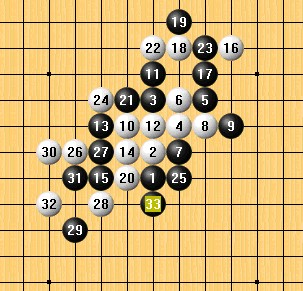

日本妖刀名局----大寒星
首页
妖刀天下
#1 日本妖刀名局----大寒星 作者：失落刀 发表时间：2008-11-6 20:48:55

黑：吉泽众三郎 名人（先手） VS 白：伊藤靖石 九段（大寒星）
黑33后白投了
1975年 第一期大桂间珠圣战决胜战局
#2 Re:日本妖刀名局 作者：失落刀 发表时间：2008-11-6 21:17:10
黑起码11是败。
#3 Re:日本妖刀名局 作者：失落刀 发表时间：2008-11-6 22:56:20

值得研究的11。
#4 Re:日本妖刀名局----大寒星 作者：刀魂 发表时间：2009-3-15 1:57:14
顶一个。。。［本站用户 有志青年 于 2009-3-15 8:33:53 花15个金币砸了你1个臭鸡蛋]
另一个同样的回复已经被我删除
#5 Re:日本妖刀名局----大寒星 作者：lijeki 发表时间：2009-3-16 10:00:35
假先方是哪个？
#6 Re:日本妖刀名局----大寒星 作者：儒释道 发表时间：2009-12-1 17:10:56
在哪里找到这么古董级的棋谱！？
#7 Re:日本妖刀名局----大寒星 作者：裁决殿雪月 发表时间：2009-12-2 0:09:52
75年还没我呢
#8 Re:日本妖刀名局----大寒星 作者：极地剑客 发表时间：2009-12-8 6:03:12
楼主太强大~挖坟党，从哪里挖的哦